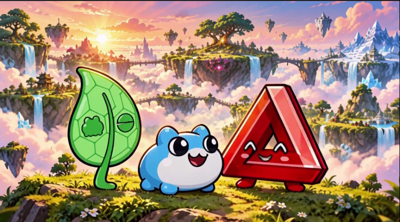
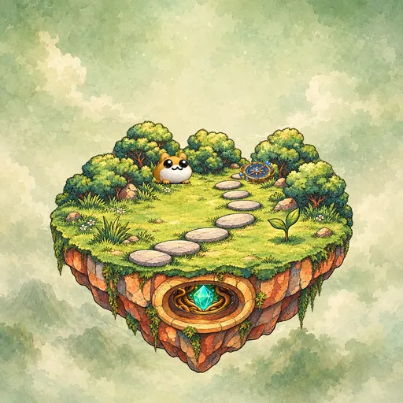

CANONICAL ARCHIVE
#—- BACKGROUND
- —
- LAND
- —
- CORE
- —
- RELIC
- —
- KEEPER
- —
Canonical signs and metadata visual only · no generated utility or playable world is claimed.
TOBYWORLD

THE WORLD IS SLOWLY AWAKENING
Study the paths. Tend what grows. Awaken each Core and cross into the next Lore Land.
CHOOSE AWAKENED DEED

CANONICAL SOURCE
#715STUDY THE LAND
EVERY DEED IS A DOOR
Look up any deed in the local canonical archive and preview the deterministic Toadaid sandbox recipe derived from its five signs.
CANONICAL ARCHIVE
#—Canonical signs and metadata visual only · no generated utility or playable world is claimed.
EVERY FROG DESERVES A PATH
🐸 Built by ToadAid, for the Toadgang community.
Made with love for the lore, the lands, and every frog who finds the pond. 🌱
This is a ToadAid-created community game adaptation. It is not a claim of official endorsement by Tobyworld or Toadgod. No wallet, login, or token action is required.
A CLEAR BOUNDARY
Tobyworld: Paths of Patience is a Toadaid-created game adaptation built around canonical Lore Land Deed references.
Deed numbers, five signs, canonical metadata, and canonical artwork are presented as source references. Playable worlds, layouts, objectives, dialogue, music, and generated sandbox rules are Toadaid adaptations—not claims about canonical lore or deed utility.
Campaign progress, best scores, control introduction, and haptic preference stay in this browser's local storage. There is no account, wallet connection, analytics, advertising tracker, or automatic social posting.
Archive visuals load locally first. If a local image is unavailable, the game may request an IPFS gateway fallback, which receives ordinary web request information such as an IP address. Visited assets may be cached on this device for offline play.
Journey Cards and social sharing are future experiments. If added, cards will be created locally and sharing will require an explicit player action; nothing will be posted automatically.
Game design, playable treatments, code, Keeper dialogue, and generative audio: Toadaid. Canonical Lore Land Deed records and imagery remain visibly separated from adapted game material.
🐸 Built by ToadAid, for the Toadgang community. Made with love for the lore, the lands, and every frog who finds the pond. 🌱
Join Toadgang Explore Tobyworld Follow Toadgod
This is a ToadAid-created community game adaptation, not a claim of official endorsement by Tobyworld or Toadgod.
THE PATH WAITS
Your place in this deed is held.
ESC · RESUME P · QUICK PAUSETAP RESUME OR ▶ TO CONTINUE